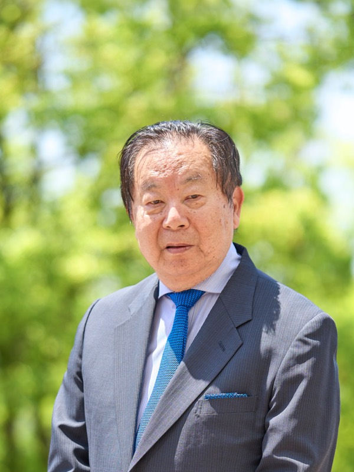
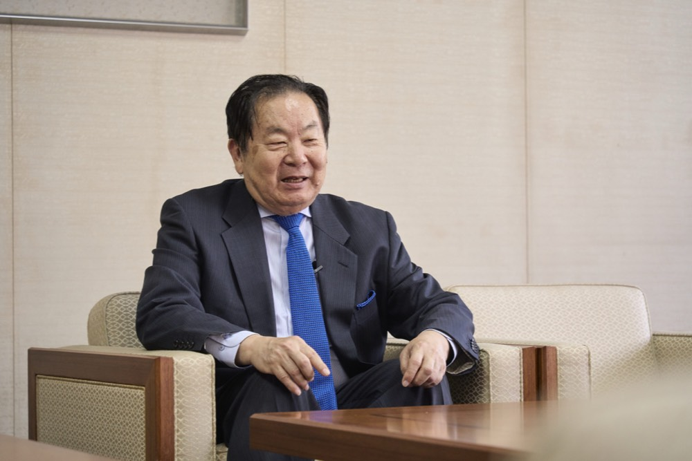
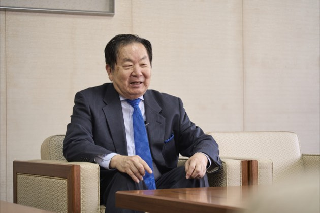
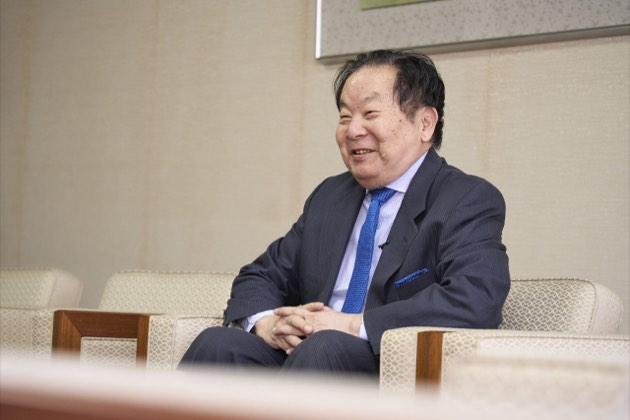
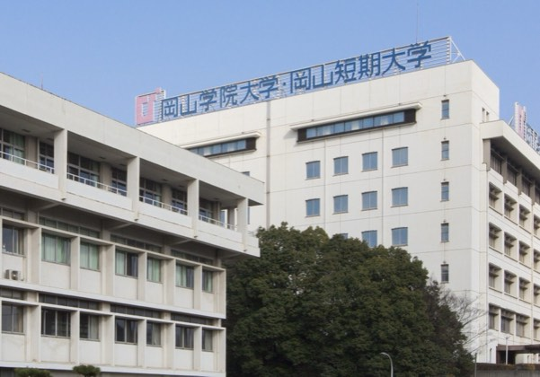
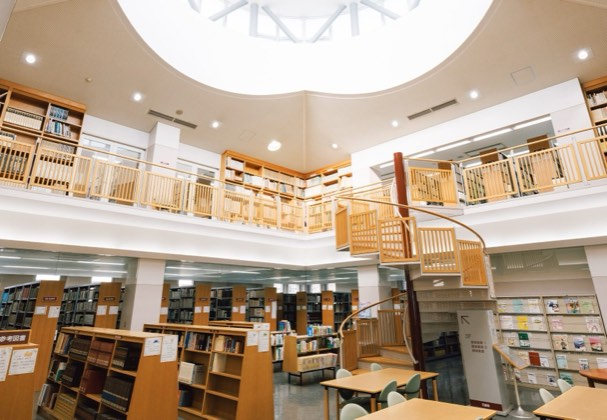
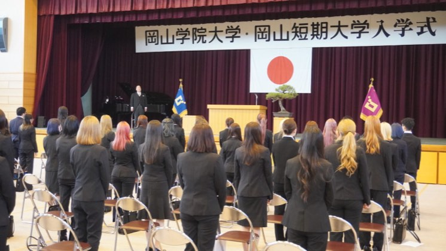

国際化とITで挑む大学の再生
大山 正史masashi oyama
岡山学院大学 / 岡山短期大学 理事長
大学教授を経て、東日本大震災直後に中国地方最大規模となる「倉敷外語学院」を設立。コロナ禍などの試練を乗り越え、2025年10月に経営危機に瀕していた岡山学院大学 / 岡山短期大学の理事長、学長に就任。「国際化」「地域貢献(介護)」「IT教育」を三本の柱に掲げ、78歳にしてハーバード大学やインドとの連携を進めるなど、先進的な大学改革を牽引している。
企業サイトを見るCHAPTER 01
教育の枠を超えた天命と起業への原点

Q大学教授という立場から、なぜ日本語学校の経営というビジネスの世界へ飛び込まれたのでしょうか?
A転機は台湾の元総統である李登輝先生から「人生におけるミッション、天命を見つけなさい」と諭されたことでした。それまで経営の経験は全くありませんでしたが、強い情熱に突き動かされたのです。
Q経営破綻の危機にあった岡山学院大学 / 岡山短期大学の理事長に就任された経緯を教えてください。
A2025年10月に就任したのですが、実は私自身、最初は全くそのつもりはありませんでした。しかし、学園が深刻な経営危機に陥っており、このままでは「日本の大学倒産第1号」になってしまうという悲痛な訴えを耳にしたのです。地元である岡山県や倉敷市から、そのような不名誉な破綻事例を出したくないという強い思いがありました。また、自分が育ててきた倉敷外語学院のノウハウを活かせば、必ず再生できるという確信もありました。最悪の場合でも、4年間は自分のポケットマネーを使ってでも学生たちの面倒を見切るという覚悟を決め、再生の舵取りを引き受けることにしたのです。
CHAPTER 02
国際化と地域貢献で「命と地域」を支える覚悟
Q大学の再生に向けた具体的な強みや、改革の柱について教えてください。
A私たちが掲げる最大の強みは「徹底した国際化」と「地域への実質的な貢献」です。現在、学園の全校生徒数は100名強に減少しており、フードマネジメント学科などは募集停止の決断を余儀なくされました。
Q介護福祉分野への特化には、どのような背景や思いがあるのでしょうか?
A国内の介護専門学校は日本人学生の減少で壊滅的です。日本最古の介護専門学校の一つである「旭川荘介護専門学校」までもが募集停止に追い込まれました。私はその現実を目の当たりにし、旭川荘の施設や人員を私たちの学園で引き取り、新たな介護専門学校として再生することを決めました。





CHAPTER 03
IT教育による変革と未来へのロードマップ
Q今後の経営目標と、岡山学院大学における新たな挑戦についてお聞かせください。
A私たちは、これからの未来を担う若い世代のために「IT教育」をもう一つの大きな柱に据えています。岡山学院大学において、新たに3つの先進的なコースを構想しています。1つ目は、昨今大企業がハッカーの標的になるなど社会的脅威となっている問題に対抗する「サイバーセキュリティ」、2つ目は「AI」、そして3つ目はITを活用して新たなビジネスを創出する「スタートアップ(起業)」です。
Q大学再生に向けた、今後の具体的なスケジュールを教えてください。
A明確な7年間のロードマップを描いています。まず来年には、大学の敷地内に「日本語学校」を新設し、そこから大学や短大、専門学校へ進学する強固な循環を作ります。次に2年後、旭川荘から引き継ぐ「介護専門学校」を開校します。そして3年後には、英語で最先端のITを学ぶ「IT学部」を立ち上げます。これらが4年間の完成年度を経て、今から7年後には、国際化とIT、そして介護のすべてが融合した、世界に誇れる全く新しい学園へと生まれ変わる計画です。現在、私の周りには、教育業界や日本語教育分野で豊富な経験を持つ人材など、私の志に共鳴した超一流の方々が集まってくれています。私自身は今年で78歳、日本の平均寿命まであと3年です。だからこそ、若い優秀なスタッフにどんどん役割を移譲し、未来へ託す準備をスピード感を持って進めています。